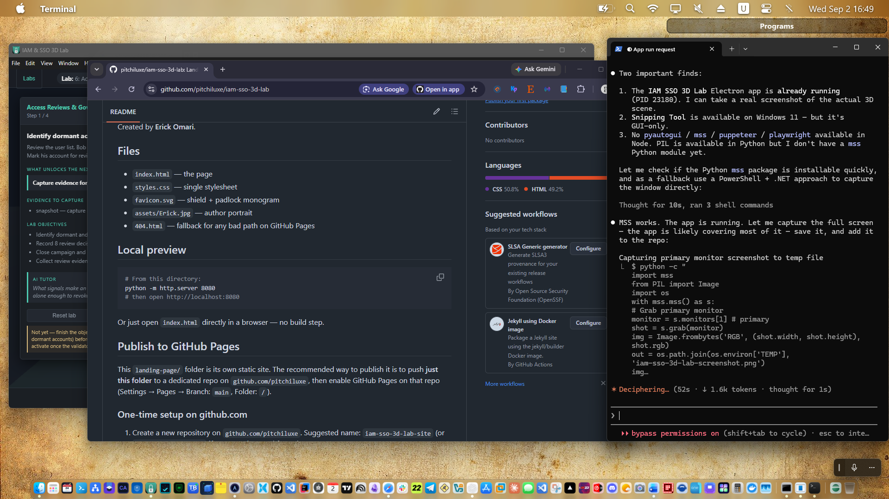

13 enterprise scenarios
IAM foundation, lifecycle, RBAC, SSO/SAML/OIDC, MFA, access reviews, break/fix, incident response, and a capstone that gates at 85%.
v0.1.0 · Windows installer ready
A job-ready 3D training lab for Identity & Access Management, SSO, MFA, RBAC, and incident response. Walk real enterprise scenarios — IdP configs, ticket queues, access reviews, break/fix drills — with an Socratic AI tutor that never gives you the answer before you've earned it.
Free · MIT-licensed lab content · All credentials and entities are fictional
A first-person 3D environment — walk the campus, open consoles, handle real tickets.

Every lab is a real-world scenario you walk through, not a slide deck. You can make mistakes. The system detects them. You fix them. The lab tells you what evidence you produced.
IAM foundation, lifecycle, RBAC, SSO/SAML/OIDC, MFA, access reviews, break/fix, incident response, and a capstone that gates at 85%.
Walk between an IAM Ops floor, a SOC, a ticket queue, and a workstation. Interact with consoles that respond to your actions.
Hints that escalate: nudge → question → approach → solution. The tutor never solves the lab for you — it asks the right next question.
Open, triage, escalate, and close tickets the way an IT or IAM team actually does. Decisions are logged and scored.
Execution, troubleshooting, least-privilege, docs, evidence, communication — six categories you can defend in an interview.
Run it in your browser, or install the Windows desktop build with full keyboard/mouse and touch support.
Each row is a skill you can put on a resume and defend in a behavioral interview.
Tell the difference in under 60 seconds. Pick the right log. Identify the right console.
Create, modify, suspend, and restore accounts. Apply least-privilege from day one — and prove it.
Read a SAML assertion, validate an OIDC token, and explain the trust chain to a non-engineer.
Pick the right factor for the right risk, roll it out, and recover the users who get locked out.
Detect stale entitlements, separate the signal from the noise, and write the attestation that auditors accept.
Triage alerts, revoke sessions, force MFA, communicate to stakeholders, and write the post-incident report.
Built with the same tools real enterprise apps use — no toy stack, no proprietary runtime.
Three.js / WebGL with a strict TypeScript build (tsc + Vite). 60 FPS target.
Eight Zustand stores wired by an event-bus-driven conductor. Mock services are singletons.
Electron + electron-builder. NSIS Windows installer, signed, with multi-resolution .ico.
Hint ladder (nudge → question → approach → solution) with Ollama plug-in for the local supervisor.

Free. Fictional. Forkable. The Windows installer lives on GitHub.
Download installer (Windows)